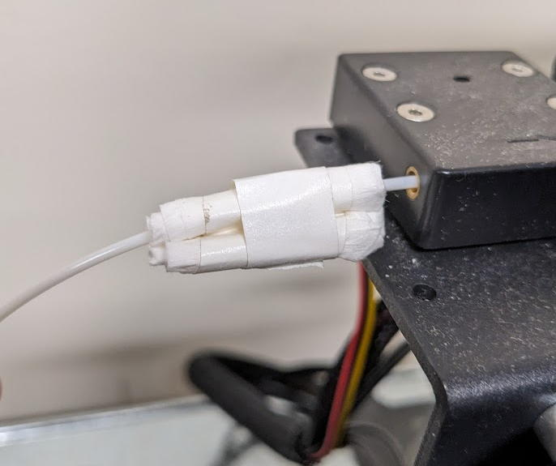
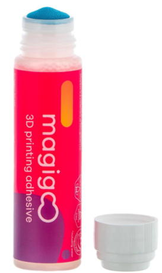

3Dプリンターの準備
3DプリンターはFDM(熱溶解方式, フィラメント方式)であり、印刷可能サイズが240(W) x 240(D) x 200(H) mmのものであれば何でも良いです。
2026年現在で我々のラボはP2S (BambuLab)を使って上手く行っています。
またもっと安いプリンタを使いたい方は我々は試していませんが、Bambu Lab A1が良いと思われます。
これらのプリンターはYoutubeにセットアップや使い方の動画が豊富にあるのでそれを見て準備を行ってください。
【ノズルの寿命を伸ばす方法】
フィラメントに付いた埃を写真のようなフィラメントクリーナー（キムワイプをテープで巻いたもの）で取り除くとノズルの寿命が数倍伸びます。

【印刷物が印刷中に剥がれなくする方法】
このような3Dプリンター用のノリを使うと剥がれなくなります。温度が下がると接着力がなくなるので?がすのも楽です。
